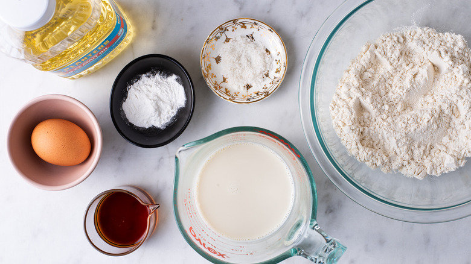

The basic pancake is made from a simple batter of eggs, flour, milk and
baking powder for leavening. You can use different types of flour if
you want to experiment with whole wheat or buckwheat. And you can also
add fruit to the mixture. The batter can be made from scratch in about
the same time it takes to make toast. The most time-consuming part
of making pancakes, of course, is cooking them. But that time is so
short you should consider these an everyday convenience food, not
a special-occasion feast. Cook this recipe a few times and it may
become part of your weekly routine. (Sam Sifton)
INGREDIENTS
2 cups all-purpose flour
2 teaspoons baking powder
¼ teaspoon salt
1 tablespoon sugar, optional
2 eggs
1½ to 2 cups milk
2 tablespoons melted and cooled butter (optional), plus unmelted
butter for cooking, or use neutral oil

PREPARATION
Step 1
Heat a griddle or large skillet over medium-low heat. In a bowl, mix together
dry ingredients. Beat eggs into 1½ cups milk, then stir in 2 tablespoons melted
cooled butter, if using it. Gently stir this mixture into dry ingredients,
mixing only enough to moisten flour; don't worry about a few lumps. If batter
seems thick, add a little more milk.
Step 2
Place a teaspoon or 2 of butter or oil on griddle or skillet. When butter foam
subsides or oil shimmers, ladle batter onto griddle or skillet, making pancakes
of any size you like. Adjust heat as necessary; usually, first batch will require
higher heat than subsequent batches. Flip pancakes after bubbles rise to surface
and bottoms brown, after 2 to 4 minutes.
Step 3
Cook until second side is lightly browned. Serve, or hold on an ovenproof plate
in a 200-degree oven for up to 15 minutes.